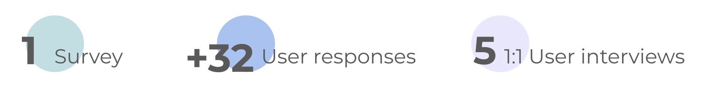

- Background
One of the most important factor in determining the fair value of a home, is based on prices achieved for homes of similar size, condition and amenities in the same area. That's why identifying Comparables to generate a valuation report is the most important process on this REalyse product.
REalyse's Portfolio Monitoring Tool (PMT) is a newbie product, one year and a half old. So far it is witnessing daily consistent and engaged traffic from users who find value in its functionalities.
REalyse provides technology data platforms that helps real estate developers, lenders, consultants, and investors understand where, when and what to build or buy in the real estate industry.
- The solution
- 3 iterations
- 1 tech team
- 8 people
We following a high dynamic product strategy, implementing features on early MVP phase and iterating on their optimization based on analytics reports and users feedback. This approach is allowing us to build a tool highly customized to our users needs and providing a differential value (Unique value proposition) among our competitors, on a quiet saturated market.
We're currently achieving around 200 MAU and this number is increasing every quarter, with a total retention to 83%. Since we implemented the third iteration we experience a 43.7% increase in frequency of use. Adoption reached 57%
- My role
- Discovery
- Ideation
- UX & UI design
I'm the Product designer lead at REalyse managing design efforts for two different products and working with two teams. I'm playing a vital role in refining our newest product, the Portfolio Monitoring tool. My job is to make sure our features meet user's needs and drive engagement. I'm applied a range of industry best practices and UX research methods to deliver impactful results and set success criteria.
- The process
- Discovery
UX research strategy
I've conducted UX survey and in-depth interviews to dig deeper into user needs on creating a property's valuation report. These qualitative research methods have provided rich insights into previously unaddressed user pain points, like the importance of providing property's images or showing the comparables located in a map.
Additionally, Through quantitative analytics tools, like Pendo and Hotjar, I've gained essential data-driven insights to inform the design decisions. By analyzing user behavior key metrics, such as engagement and adoption rates and feature usage patterns, I've been able to prioritize enhancements that the users finds meaningful and measure the success of our design solutions.
To learn in-depth about the market, I observed several industry leaders competitors and created a Competitor Benchmark. Analyzing such important elements like their strengths, their revenue generation, their staments... I could identify opportunities for PMT product.
- Key findings
⁍ Provide detailed search filters to help users find comparable properties for accurate valuation. - 71%
⁍ Show property images to enable precise selection of comparables. - 63%
⁍ Properties must be displayed on a map - 84%
⁍ Users want to be able to choose the properties to run the valuation report - 67%


- The process
- Ideation
Identifying Users
Utilizing insights gathered from previous phase, I created detailed user personas representing different segments of our target audience:
- Investors Prop Tech - owners of disruptive business to break traditional RE agents
- Goal Complete their business service with a category of data they’re missing. Also consult past and future forecast
- Needs Searching for providers that can offer solutions more time- and cost-efficient than building them in-house
- Value Ensure data accuracy
- Property Manager Lettings manager
- Goal Manage clients portfolios (large num of properties) and Renewals for the rentals
- Needs Reporting how well the properties are performing base on occupancy rent levels
- Value More precise key insights
- Developers Turning raw land or neglected buildings into new homes or businesses
- Goal Value properties that are currently under development and performance of previous development
- Needs Use an independent provider to validate their analysis. Provide reliable & trustworthy data from different data sets
- Value Valuations of properties currently and in the future combining demographic data
- Lenders Provides financing to real estate investments and guarantee that the money will be repaid
- Goal Maintain a certain level between the money they lend and the prop value
- Needs Risk of loss LGD (loss given default) Lend money to a property is going down on value
- Value Market insights and different key metrics. Valuations of properties and portfolios
These user personas helped us empathize with users, understand their motivations, goals and pain points, guiding the design decisions.

- The process
- UX/UI design
UX/UI design
Iteration 1We started launching the first iteration of the Comparables feature at the end of October 2023. At that point we provide an optimized set of filters, a search box and the full list of properties with similar size and conditions to the one previously selected by the user.
This approach solved the first key finding from the research:
⁍ Provide advanced
filters to help users find comparable properties for accurate valuation.
Insight
Users need to see property images to select the comparables precisely.
Include users voice at this iteration was crucial to provide an optimized solution for their needs.
After this discovery, I brainstormed some possible solutions. Firstly I share them with my team and after adding some feedback I created interactive prototypes to test with a select group of participants. That was the starting point of the Second iteration for Comparable feature.
- The process
- UX/UI design
UX/UI design
Iteration 2To check the proposed solutions, I ran an A/B test, one option clearly stood out as the winner. I took the feedback gathered during testing and fine-tuned the design. Following this process, we were confident that the feature was user-friendly and nailed what our users asked for. The iteration 2 of Comparables feature was launched on April 2024.
This iteration solved the second key finding from the research:
⁍ Show property
images to enable precise selection of comparables.


Review the final iteration 2 implementation captured in this video.
- The process
- UX/UI design
UX/UI design
Iteration 3On the tech team we already have planned to implement a google map that would Geo-locate the properties and help to understand the distance between them on a precise and visual way. We asked users about this functionality, during the survey, and they overwhelmingly validate it. So the maps was clearly on of the improvements to add during the 3 phase. The other improvements were discovered during the users interviews (explaining more below).
This iteration solved the two last key finding from the research:
⁍ Properties must
be displayed on a map
⁍ Users want to be able to choose the properties to run the valuation
report
Insight
Users want to be able to choose the properties to run the valuation report.
Iterating based on users feedback was key to provide a solution that best meets their needs.